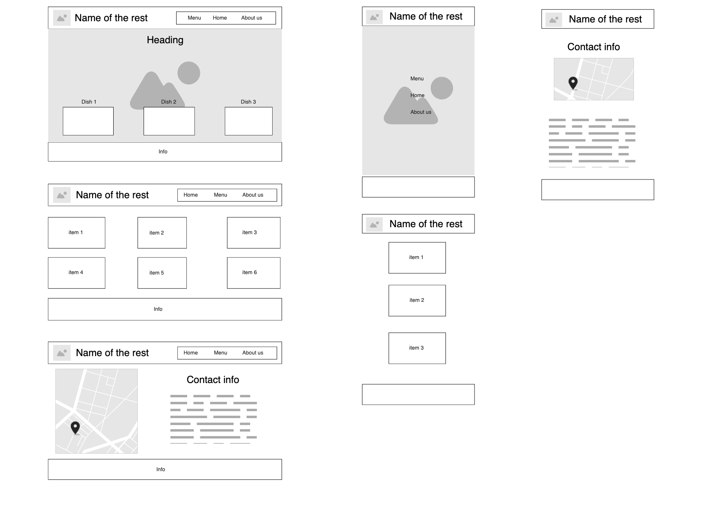

Site Name
Yapiko Menu - A restaurant menu site for Yapiko, showcasing its delicious offerings and restaurant information.
Site Purpose
The website provides an online menu for the restaurant Yapiko, including detailed descriptions, pricing, and images of dishes. It will also feature information about the restaurant, such as location, hours of operation, and contact details.
Scenarios
- What dishes are available at Yapiko, and what are their prices?
- Where is Yapiko located, and what are its opening hours?
Color Schema
- Main Color: (#003366) - Used for headings and accents.
- Text Color: (white) - Used for text.
- Highlighted Color: (#f4d03f) - Used for highlighted text.
Typography
- Body Font: Open Sains - Used for general content.
Wireframe
A wireframe sketch will be designed separately for both mobile and desktop views.
